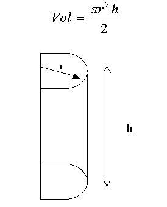

TC1028. Pensamiento computacional para ingeniería . |
||||||
|
||||||
. Objetivo:
 Modalidad:

Instrucciones:
Casos de prueba:
Input: Son
los valores introducidos por el usuario. 
Ejercicios:
Por ejemplo:
x = math.sqrt(y)
La raiz de y se guarda en la variable x
Casos de prueba:
Input: Lado A
Input:
2
Input:
3.5 Input:
7.28
 Casos de prueba:
Input:
5
Input:
8.3 Input:
7.25

Instrucciones para enviar tus archivos por Canvas:
Especificaciones de entrega en Vocareum:
|